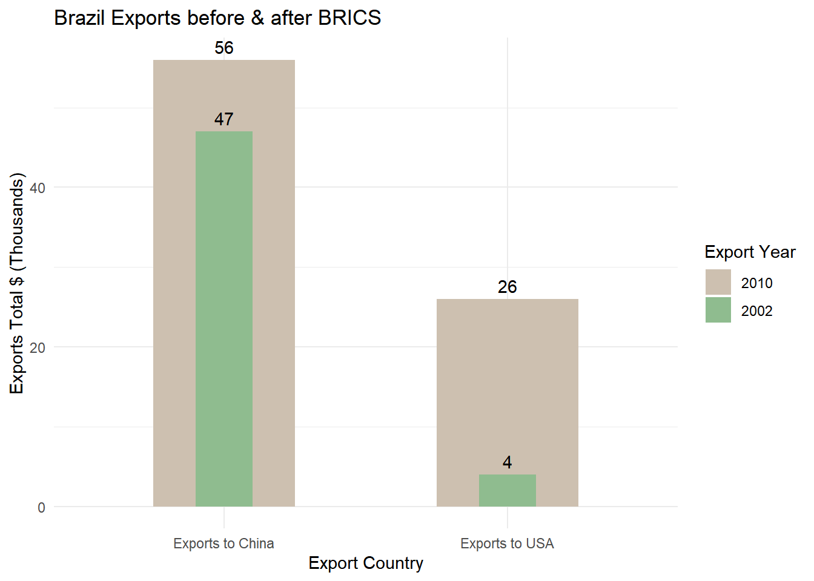

Show Hidden Code
library(ggplot2)
library(dplyr)
library(tidyr)
# Example data frame
df <- data.frame(
Category = c("Exports to USA", "Exports to China"),
Variable1 = c(26, 56),
Variable2 = c(4, 47)
)
# Reshape the data into long format
df_long <- df %>%
pivot_longer(cols = starts_with("Variable"), names_to = "Variable")
# Create a new column for grouping
df_long <- df_long %>%
mutate(Group = ifelse(grepl("1|3", Variable), "Group1", "Group2"))
# Create a variable width column chart with specific groupings
ggplot(df_long, aes(x = Category, y = value, fill = Variable)) +
geom_col(data = filter(df_long, Group == "Group1"), position = position_dodge(width = 1), width = 0.5) +
geom_col(data = filter(df_long, Group == "Group2"), position = position_dodge(width = 0.5), width = 0.2) +
scale_fill_manual(values = c("Variable1" = "antiquewhite3", "Variable2" = "darkseagreen"),
labels = c("Variable1" = "2010", "Variable2" = "2002")) +
labs(title = "Brazil Exports before & after BRICS",
x = "Export Country",
y = "Exports Total $ (Thousands)",
fill = "Export Year") +
theme_minimal() +
geom_text(aes(label = value), vjust = -0.5)